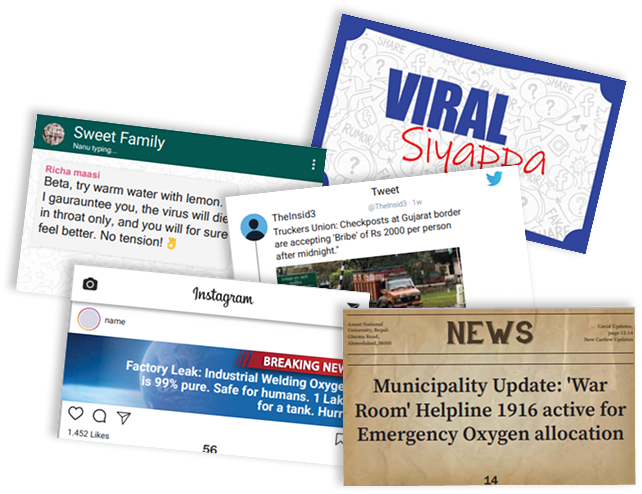
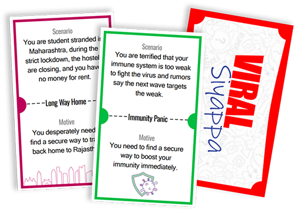
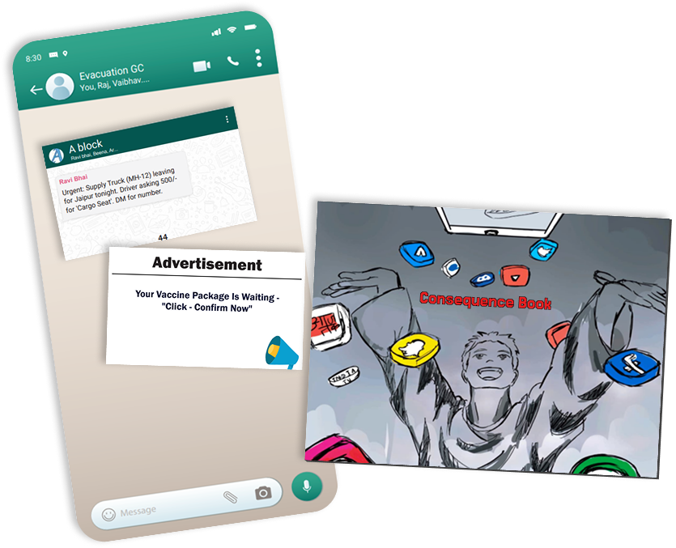
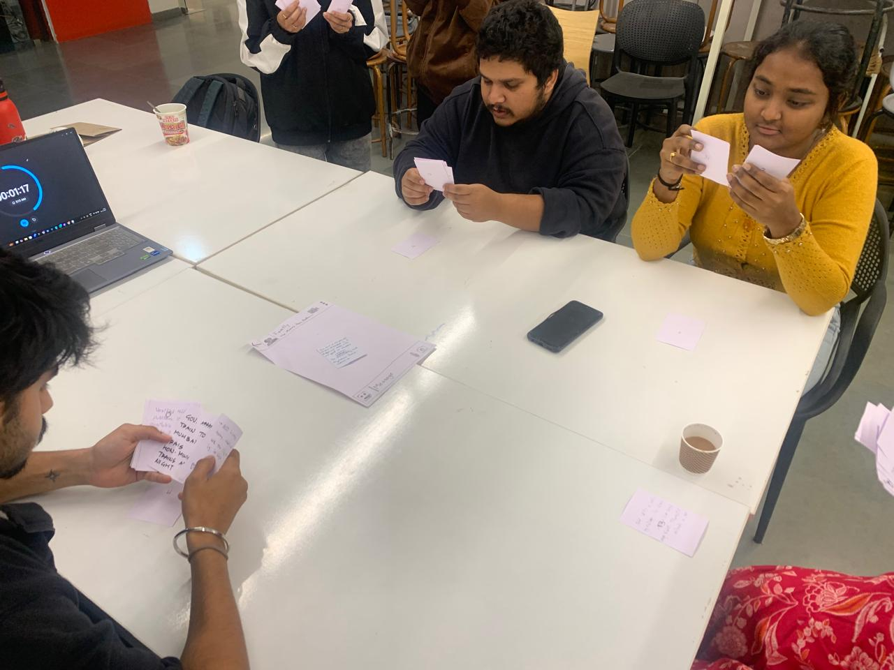
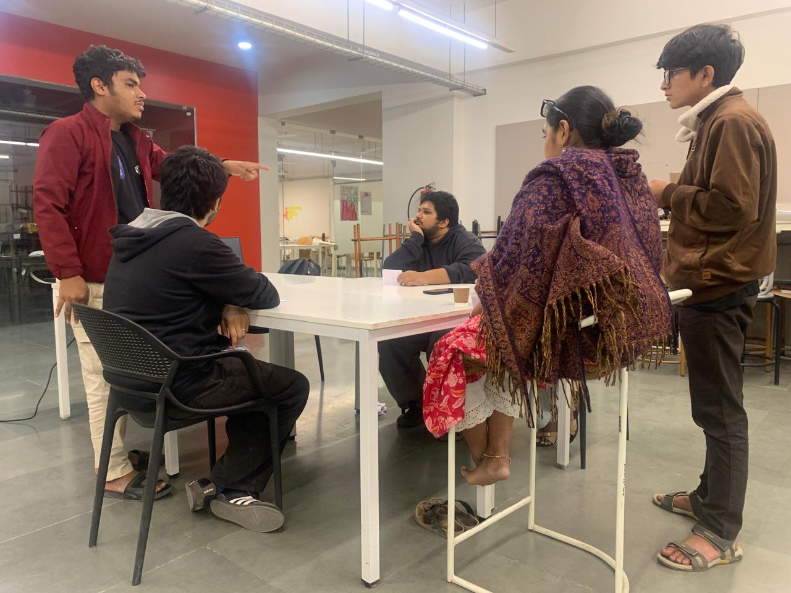
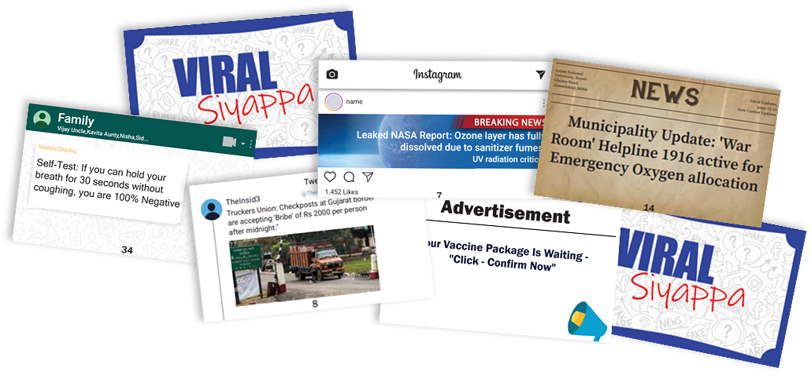
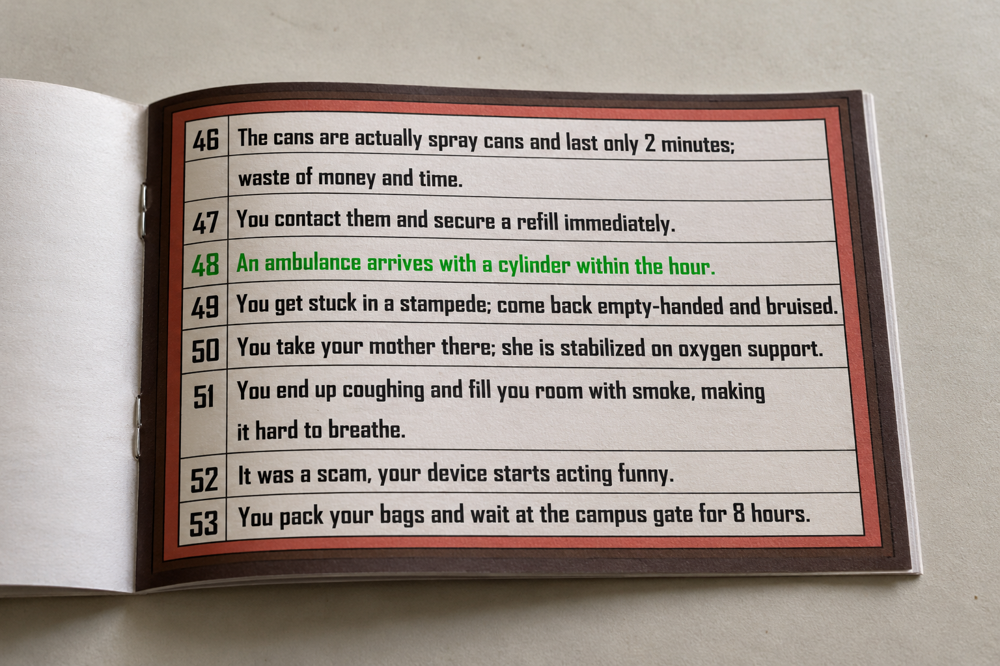

Shared motive
Scenario and motive cards give everyone a common goal to work towards.
GAME DESIGN·SYSTEMS DESIGN·INTERACTION DESIGN
CASE STUDY / 04
Every piece of information carries a consequence.
A cooperative tabletop game where uncertain information becomes a shared decision with real consequences. Players must evaluate incoming news, discuss what they trust, and agree on a response before time runs out.
Viral Siyappa turns the chaos of an infodemic into a cooperative tabletop experience.
Set during a major health crisis, the game places players in a situation where useful information, rumours, scams and misleading claims arrive together. Everyone shares one goal, but each player sees only part of the information and must decide what deserves to be passed on.
Instead of explaining misinformation from the outside, let players experience the pressure of judging information together.
In a crisis, urgency and fear can make an unverified message feel like a lifeline.
Traditional information about media literacy can stay abstract. The game explores another route: put players under time pressure, make them compare competing claims, and let the group see the consequence of its final choice.
How might a game make the consequences of misinformation tangible while encouraging verification, discussion and collective responsibility?
The goal was to turn an information problem into something a group could discuss, negotiate and act on together.
Scenario and motive cards give everyone a common goal to work towards.
Short phases make information selection and group agreement feel urgent.
The final choice is checked against a consequence chart, connecting the decision to an outcome.
The COVID-19 context gives the scenarios familiar stakes: health, travel, access to supplies and the safety of people close to you.
The game moves from private selection to a public group decision, then reveals the outcome.
PRIVATE INFORMATIONSHARED DECISIONVISIBLE OUTCOME
The physical pieces make incoming information, shared context and consequences distinct.

A mixed feed of claims and possible leads, from helpful information to rumours and scams.

A scenario establishes the common goal for the group.

Selected news is forwarded to a shared space; the reverse reveals the corresponding consequence.
A timer, using a phone, keeps the selection and consensus phases moving.
Select each phase to follow the game from a private hand of cards to a group verdict.
Each player starts with 10 news cards. Choose one card that might solve the motive, pass the remaining hand to the left, then select again from the new hand. Repeat until each player has three selected cards.
From the three cards they selected, each player chooses one best card and places it face-up on the Chat Board. Private choices become information the whole group can inspect.
The group considers the cards on the Chat Board, discusses which one is the real solution and which may be false or harmful, then votes on one final card before time runs out.
Flip the Chat Board and use the Consequence Chart to check the selected card. A verified solution leads to success; a harmful or misleading outcome means the group loses.
The exact outcome depends on the card chosen and its entry in the printed Consequence Chart. The interface here explains the rules; it is not a playable digital version of the board game.
The sprint moved from a social issue to a complete, printable game system.
With limited time, the work had to balance the core mechanic, rule clarity, visual identity, team coordination and print-ready outputs. The process focused on getting to a playable system, then refining the rules and components through playtesting.
Frame the information problem around a familiar crisis.
Identify the kinds of messages and decisions the game should represent.
Shape the shared goal, card exchange, group discussion and outcome.
Give the rules and component relationships a physical form.
Three rounds of playtesting informed further mechanic iteration.
Apply a coherent visual system across the cards, board and instructions.


Viral Siyappa brings uncertain information, time pressure and collective choice to the same table. Replace these placeholders with sharper photographs or exports of the finished game components.
Show how the pieces come together during play.

Make the variety of claims legible.

Show where the group's decision is checked.
Explore the Viral Siyappa game page on itch.io.
The project aims to turn misinformation from an abstract subject into a situation players can talk through together. Its intended value sits in the experience of slowing down, questioning a message, defending a choice and hearing other perspectives.
Encourage players to examine a message and its relevance before choosing to forward it.
Use discussion and voting to practise reaching consensus rather than following the loudest voice.
Make the result of the team's decision visible through the Consequence Chart.
These are intended outcomes of the concept, not measured learning outcomes or claims of proven behavioural change.
DESIGNING UNDER 48 HOURS
“The biggest challenge wasn't generating ideas. It was deciding which ideas to let go of.”
With a short sprint, every extra mechanic competed with the time needed to make the rules understandable, coordinate the team and prepare a complete playable output. The most important design work was deciding what the experience needed to do, then keeping each component in service of that goal.
Viral Siyappa reinforced that designing a game is also designing a system: rules, visual cues, information flow and group behaviour need to work together. Further iteration would focus on observing where players hesitate, what information they rely on, and whether the intended conversation emerges naturally during play.
Document playtest observations, refine any confusing rules, and evaluate whether the game helps players articulate how they judge and share uncertain information.